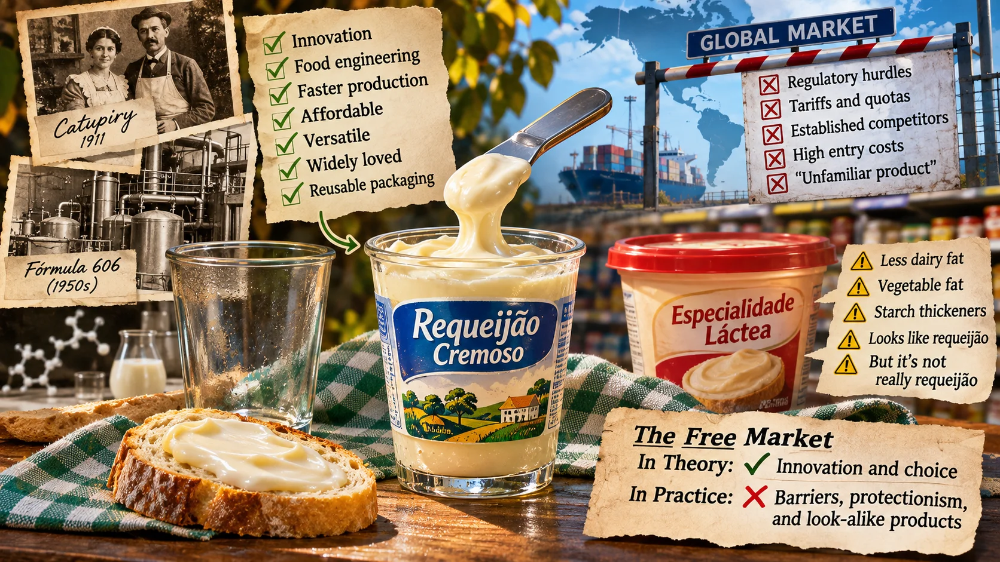

In focus
Browse the archiveTHE PUBLICATION
Latest dispatches
We Know It’s True. We Just Don’t Know Why.
You Have the Right. Now Try to Enforce It.
The Crime of Holding Scissors While Foreign
Trump trying to silence thousands of companies before Dem take over
Legend Bob Woodward levels Trump with a chilling comparison

The most historic blow yet to Trump and MAGA

Americans can’t afford to just 'move on' again
Top economist predicts war inside both parties —and who will win it
No articles match that search. Try another word.
Look past the spectacle.
Follow the system.